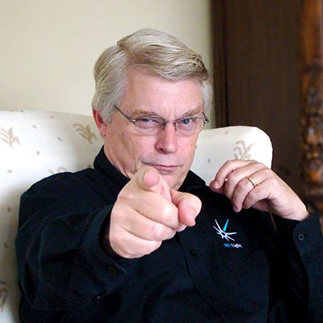
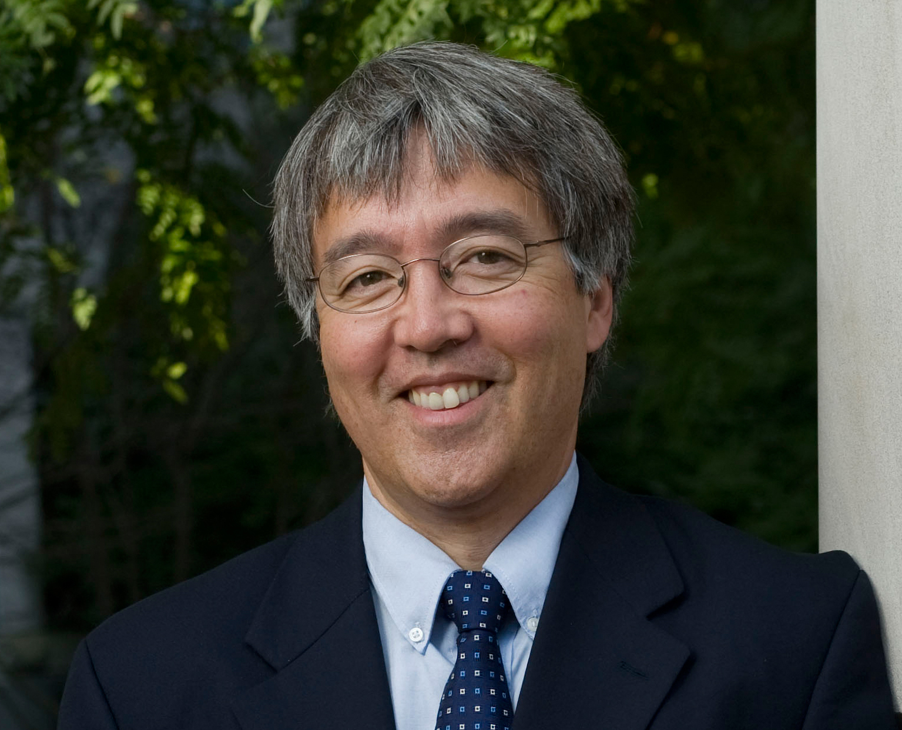
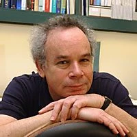

Robert C. Martin

Robert C. Martin, também conhecido como "Uncle Bob", é um engenheiro de software e autor de diversos livros sobre desenvolvimento de software e boas práticas de programação.
Seu universo de conhecimento em um só lugar.
Conheça alguns dos autores presentes em nossa Biblioteca Digital.

Robert C. Martin, também conhecido como "Uncle Bob", é um engenheiro de software e autor de diversos livros sobre desenvolvimento de software e boas práticas de programação.

James F. Kurose é professor e pesquisador da área de Redes de Computadores. É coautor de um dos livros mais utilizados no ensino de redes em universidades do mundo.

Abraham Silberschatz é professor e pesquisador da área de Ciência da Computação, reconhecido mundialmente por suas obras sobre Banco de Dados e Sistemas Operacionais.